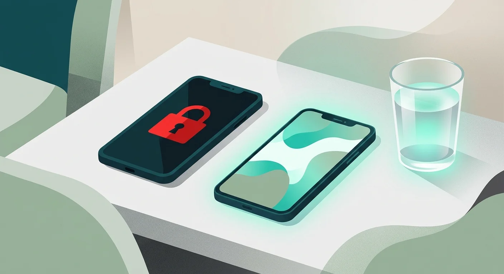
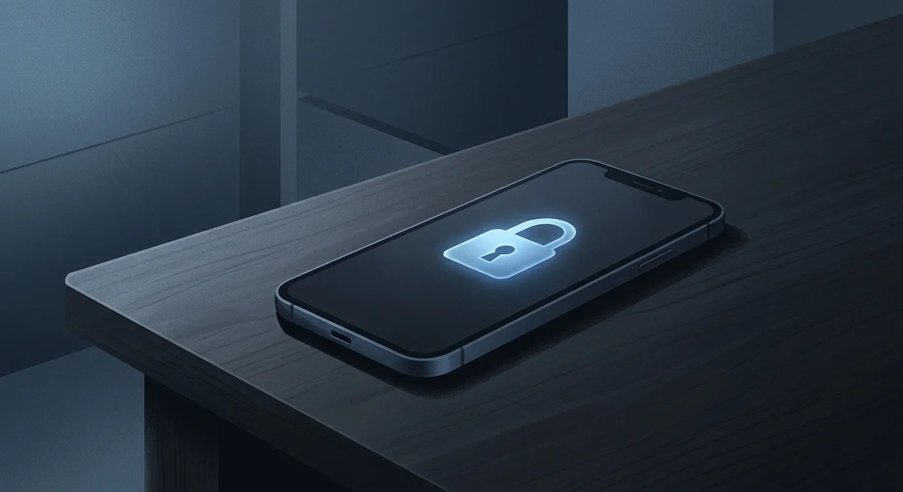
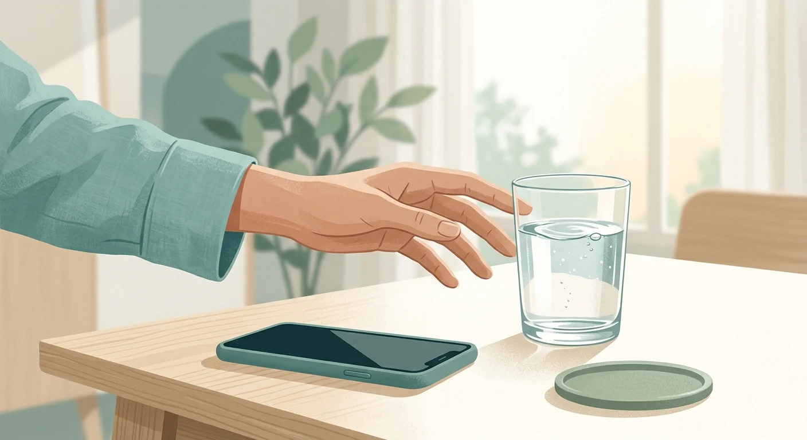

Sip & Scroll vs. Opal: Which Screen Time App Is Right for You?
Two very different philosophies. One goal: less mindless scrolling. Here's how to choose.

You've decided to cut back on your phone. Not delete everything — just be more intentional. So you download an app blocker. You set it up, pick your problem apps, and go to bed feeling like you've finally got a plan.
The next morning, you reach for Instagram out of habit. The block hits immediately. A message: Focus session active. Access denied. No override. No timer. Just a wall. It's 7:03 AM and you feel punished before you've done anything wrong.
By noon you've already uninstalled the app. Not because you don't want to change — but because being locked out of your own phone feels like wearing a straitjacket, not building a habit.
This is the fundamental tension in screen time management software. Opal and Sip & Scroll represent the two dominant schools of thought: the hard wall, and the gentle nudge. Both work. Both fail. The question is which one fails less for you specifically — and that depends entirely on your psychology, your goals, and what kind of relationship you want to have with your phone going forward.
What Opal Does — and Does Well

Opal is a polished, productivity-first app blocker. You create Focus Sessions — scheduled or on-demand blocks that lock you out of chosen apps and websites for a defined window. The interface is clean. The scheduling system is flexible. The "Deep Work" mode makes it feel like a serious professional tool rather than a parental control.
What makes Opal genuinely compelling is its social accountability layer. You can share focus streaks with friends, which introduces a real — if light — commitment device. When sessions are active, bypassing them in Deep Work mode requires waiting out a cooldown timer. That 10-second pause is often enough friction to make you put the phone down. For the right person, it works extraordinarily well.
Opal also provides detailed usage analytics: time spent per app, blocked time saved, weekly trends. If you're someone who likes data dashboards and optimized schedules, that feedback loop is motivating. You can see your deep work hours accumulating like a savings account.
Best for: Professionals protecting scheduled focus blocks, students during exam season, anyone who responds well to hard commitments and usage data.
Pricing: Opal has a limited free tier; full features require a subscription available on the App Store at roughly $8/month (approximately $99–$120/year billed annually).
Where it struggles: Opal's strength is also its weakness. Hard lockouts produce a rebound effect in many users — the moment the block lifts, the urge to catch up on everything you missed hits harder than usual. Strict blocking doesn't address the underlying impulse; it just delays it. And for users who scroll as a decompression ritual rather than a pure addiction, being locked out can feel adversarial rather than supportive.
What Sip & Scroll Does Differently

Sip & Scroll takes the opposite position: it doesn't block you. It asks a question.
When you open a managed app — TikTok, Instagram, YouTube Shorts, whatever's pulling at you — you get a pause. Not an error. Not a wall. A prompt: take a sip of water, snap a quick selfie proving it, and you're in. Then you get up to 45 minutes of uninterrupted access before the cycle resets. Another sip to continue, or stop. Your choice.
This is what behavioral scientists call friction-based intervention — the same mechanism that makes one-click buying so dangerous in reverse. You're not fighting the algorithm with willpower; you're inserting a small physical act between the impulse and the reward. That three-second pause is enough to make the decision conscious instead of automatic. And unlike a hard block, it doesn't feel punitive — it feels like self-care.
The hydration mechanic is the genuinely novel piece. You're not just building boundaries around your screen time; you're replacing a mindless habit with a healthy one. Every session starts with a sip of water, a physical reset. Over time, that ritual becomes the new association: opening Instagram means drinking water first. That's habit replacement at the architectural level — far more durable than willpower.
The 45-minute session model also creates natural stopping points without artificial walls. You chose to open the app. You get a real session. When 45 minutes ends, the friction returns — and that moment of friction is where the decision gets made. Do you actually want more, or did you get what you needed?
Best for: Anyone who wants to be more intentional without being punished, people who use scrolling as decompression and want to keep that relationship healthy, iOS users who've tried hard blockers and bounced off them.
Pricing: Free to download on the App Store. Premium features available.
The Core Philosophical Difference
Strip both apps down to their design philosophy, and you get two fundamentally different diagnoses of the problem.
Opal's diagnosis: you can't trust yourself, so the app will enforce boundaries for you. It treats app overuse as a discipline failure requiring external control. That's not an insult — it's a model that works for a specific type of person and a specific type of problem. A surgeon who needs to focus for six hours during complex scheduling needs a hard block. An exec doing deep strategy work needs to be unreachable. Opal serves that person exceptionally well.
Sip & Scroll's diagnosis: you're using apps habitually, not intentionally — and the fix is making each use a choice. The problem isn't that you enjoy Instagram; it's that you open it without deciding to. Friction doesn't remove the option. It inserts a decision point. Research on doomscrolling and habit loops consistently shows that the most durable behavior change comes not from restriction but from ritual replacement — giving the brain something to do in the gap between impulse and action.
Punishment-based approaches also tend to produce what psychologists call reactance — the instinct to rebel against perceived control. Tell yourself you can't have something, and suddenly you want it more. Hard locks can intensify the craving rather than dissolve it, especially for casual scrollers who weren't addicted to begin with. The digital minimalism framework addresses this directly: the goal isn't elimination, it's intentionality.
Head-to-Head: The Key Differences
| Feature | Opal | Sip & Scroll |
|---|---|---|
| Blocking approach | Hard lockout (wall) | Friction (nudge) |
| Override possible? | No (in Deep Work mode) | Always — after the ritual |
| Session model | Scheduled or on-demand blocks | 45-minute access sessions |
| Unique mechanic | Social accountability streaks | Hydration ritual + selfie |
| Usage analytics | Yes (detailed) | Session tracking |
| Platform | iOS + Mac | iOS |
| Pricing | ~$8/month (~$99–120/year) | Free to download |
| Philosophy | Enforcement | Ritual replacement |
Who Should Use Opal
Opal is the right choice if you have a specific, scheduled focus problem. You need to be unreachable from 9 AM to 1 PM. You want to protect deep work blocks you've already committed to. You respond well to hard commitments — the same psychology that makes gym streaks work for some people. You appreciate detailed usage analytics and want to track progress quantitatively.
It's also the better tool if you use apps on Mac as well as iPhone, since Opal's cross-device blocking removes the easy workaround of just switching devices. If you've tried softer approaches and found them ineffective, Opal's enforced structure may be what you need. Some people genuinely need the wall.
The cost of entry is real, though. At roughly $99–$120/year, Opal is a subscription commitment. And if you're the type who uninstalls apps the first time they frustrate you — be honest with yourself — the hard lockout model may not survive contact with a Monday morning.
Who Should Use Sip & Scroll
Sip & Scroll is the right choice if your relationship with social media is complicated rather than catastrophic. You enjoy scrolling — you just don't want it to eat three hours without you noticing. You've tried hard blockers and bounced off the frustration. You want to build a sustainable habit rather than a temporary restriction.
It's particularly well-suited for morning routines. If you've read about how early morning phone use hijacks your cortisol response, the friction moment that Sip & Scroll inserts — sip of water, selfie, decision made — is exactly the kind of ritual that interrupts automatic behavior at the most critical point of the day. You're not locked out. You're asked to be present before you enter.
It's also the right choice if you're budget-conscious. Free to download means zero commitment risk — you can try it without deciding anything about your relationship with screens yet.
The honest limitation: if you need hard enforcement during scheduled work hours, Sip & Scroll won't replace Opal for that use case. Friction can always be bypassed. If your problem is that you will always bypass friction when you're stressed or bored, you may need the harder wall. That's a self-knowledge question, not a judgment.
The Verdict — It's About Your Brain Type
There is no universally better app. There is only the better app for how your brain responds to restriction.
If you're a scheduler — someone who plans their day in blocks, thrives on streaks, and needs a commitment device to enforce what you've already decided — Opal is worth the subscription. It was built for you.
If you're a ritualist — someone who wants to change the relationship rather than end it, who scrolls for decompression and isn't ready to go cold turkey, who's bounced off hard blockers before — Sip & Scroll is built for you. It doesn't try to make you less human. It just asks you to take a sip first.
The most common failure mode in screen time management isn't choosing the wrong app. It's choosing a tool whose philosophy contradicts your psychology and then blaming yourself when it doesn't work. You cannot out-willpower an algorithm engineered by thousands of people to mine your attention — but you can change the architecture of how you access it. The question is whether that architecture should look like a wall or a ritual. Only you know which one you'll actually live with.
Try the gentle approach — free.
Sip & Scroll turns your scroll sessions into a mindful ritual. No subscriptions, no punishment. Just a sip of water and 45 minutes of intentional access.
Download Sip & Scroll — Free